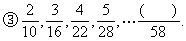
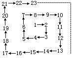
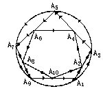

习题十四
1. 请你根据下列各个数之间的关系，在括号里填上恰当的数：
①1，5，9，13，17，（ ）。

②0.625，1.25，2.5，5，（ ）。
④198，297，396，495，（ ），（ ）。

2.将自然数1，2，3，…，按图排列，在“2”处转第一个弯，“3”处转第二个弯，“5”处转第三个弯，….问哪个数处转第二十个弯？
3.请用速推方法求出甲、乙、丙、丁四人站成一排照相，共有多少种不同站法？
4.上一段12级楼梯，规定每一步只能上一级或两级.问要登上第12级楼梯共有多少种不同走法？
5. 有10个村庄，分别用A1，A2，…，A10表示，某人从A1出发按箭头方向绕一圈最后经由A10再回到A1，有多少种不同走法？

注：每点（村）至多过一次，两村之间，可走直线，也可走圆周上弧线，但都必须按箭头方向走.